7/12/2023 Operation: Messing with 5 Year Old
This has to be the funniest operation ever. There was this 13 year old named Tony that is very stupid. We managed to trick him into thinking that his phone was about to explode and that he was going to get hacked. We said the only way to get unhacked was to beat me in slap battles. He ended up getting destroyed lol. Then we said that it was all a prank and he started crying like a little baby. Then we found out that he has autism, yikes!
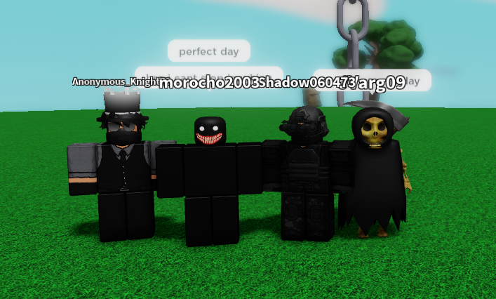7/10/2023 Operation: Civilian Bombing
Units of the Bravo 800 Special Operations Unit were deployed into Slap Battles. Their main mission was to wipe out all civilians in the area. They used jets to launch nuclear missiles at the civilians. The mission was successful and the civilians were wiped out.
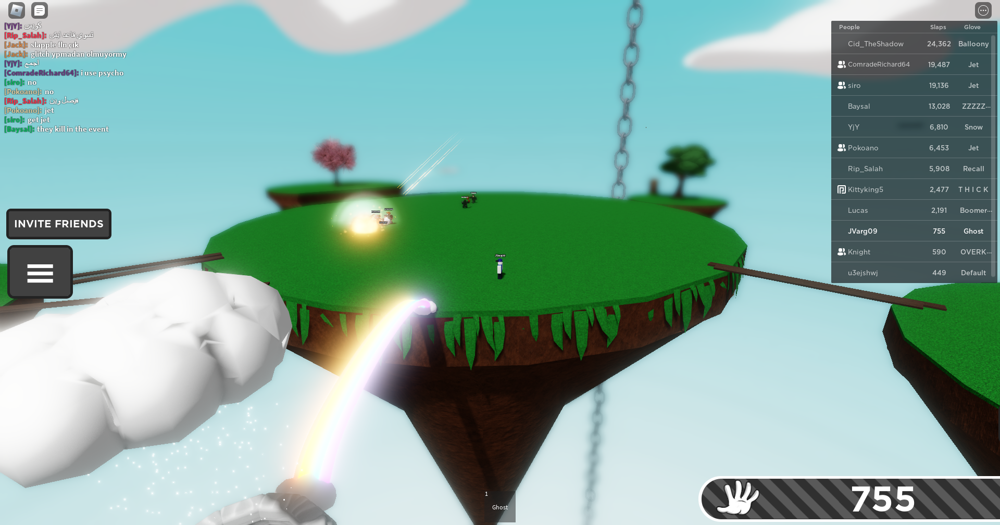 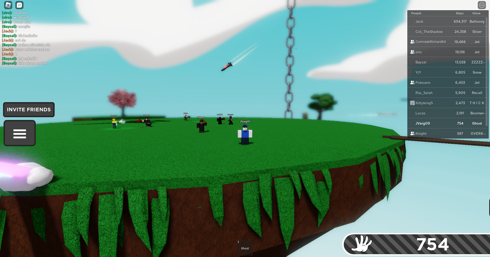7/9/2023 Operation: Hunting Down Mentally Insane Girl
6 units of the Bravo 800 Special Operations unit deployed into [REDACTED] in order to pursue down their old target, nyla, who had escaped custody of the government. This time, the team was equipped with a main battle tank, and light artillery along with armored humvees. Missiles were launched at the site in an attempt to stop nyla, but mostly failed but slowed her down. After a while, one of the soldiers of the Bravo 800 squad, Scott, convinced nyla to enter his armored truck with Luca inside of it and Josh and Jayden escorting it. Scott then drove the truck at max speed into the water before him and Luca jumped out, and nyla started to drown before being taken back into custody. Since we used all of our money on our vehicles and now the government is defunding us, we could not afford a camera to take any pictures, so have this cool picture of an old man on a scooter!!!!!!
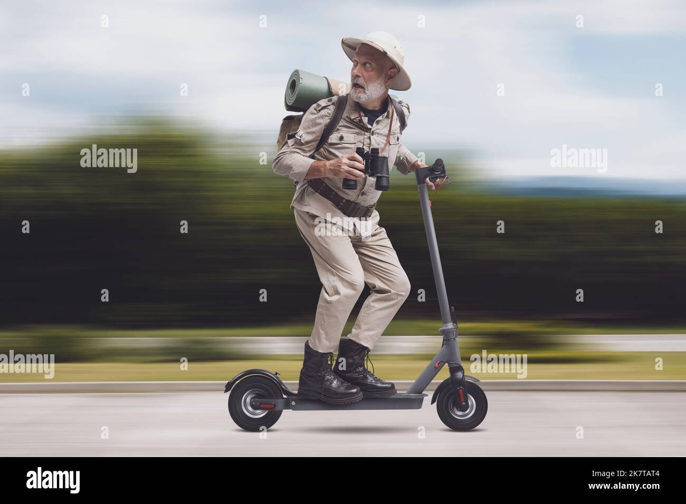7/8/2023 Operation: Kill Subject "Nyla"
5 of the most elite units in the Bravo 800 Mobile Task Force were deployed into [REDACTED] for the sole purpose of ending the mob leader's daughter, Nyla. This plan went South when the team realized there was a mercenary in their ranks, the agent known formally as "DJJU1ce_dr0pper" or simply "DJ" He was hired by the mob leader to get his daughter off site for payment, after a barrage of nukes detonated in the area, the subject was nearly killed, but before being taken in to custody she had surrendered.
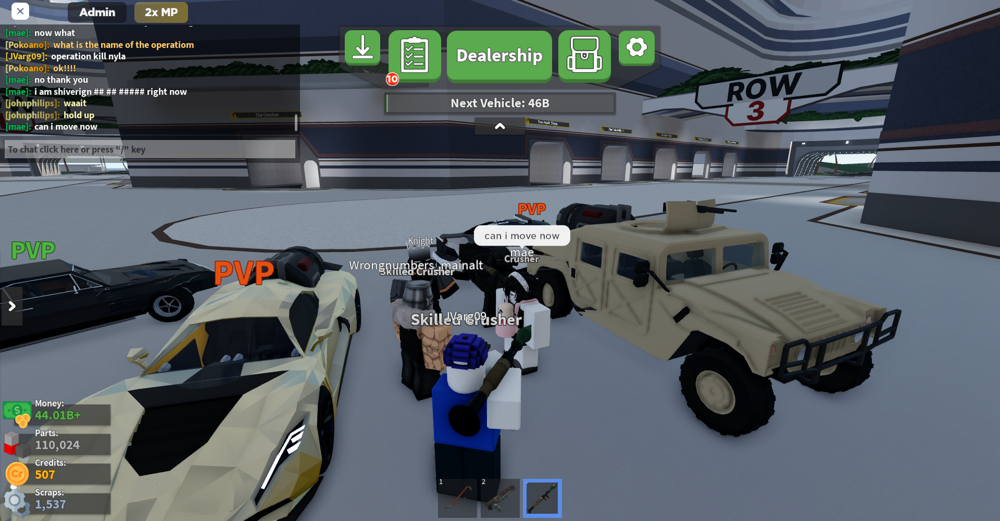 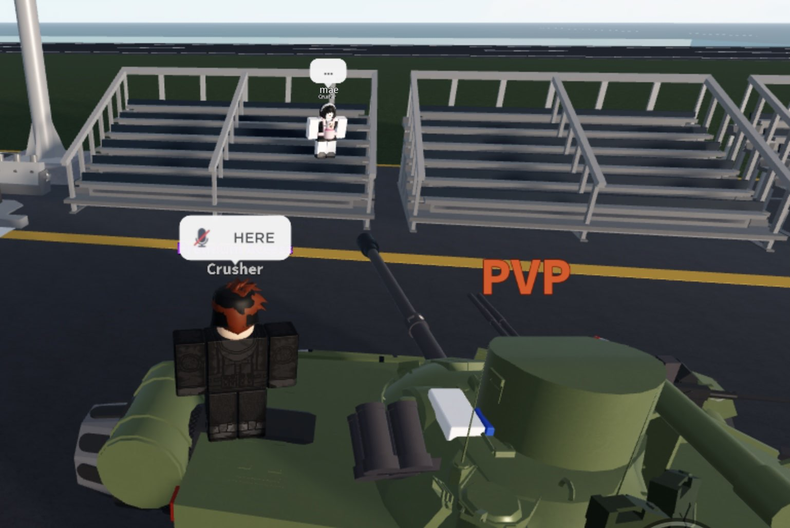4/10/2023 Operation: Get Akhil Under or Something
5 of Bravo 800 spec ops deployed into Brookhaven to capture the terrorist "TheFanciestKiller64". After a long chase of him in a tank, he was eventually captured and is now being sent to death row to die.
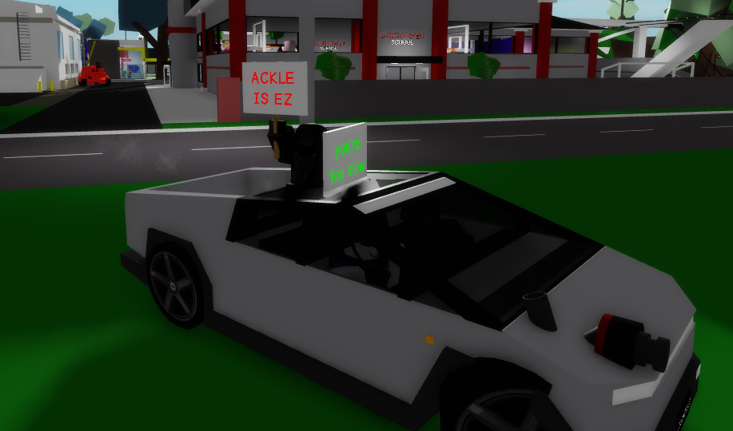4/9/2023 Operation: Attack Fatties
3 of Bravo 800 spec ops people deployed into Brookhaven to hunt down the fatties known as alia and nyla. They were put into a golf cart while a red tank was chasing them while blowing up the entire city. The fatties got a punishment of being deep fried and cooked alive.
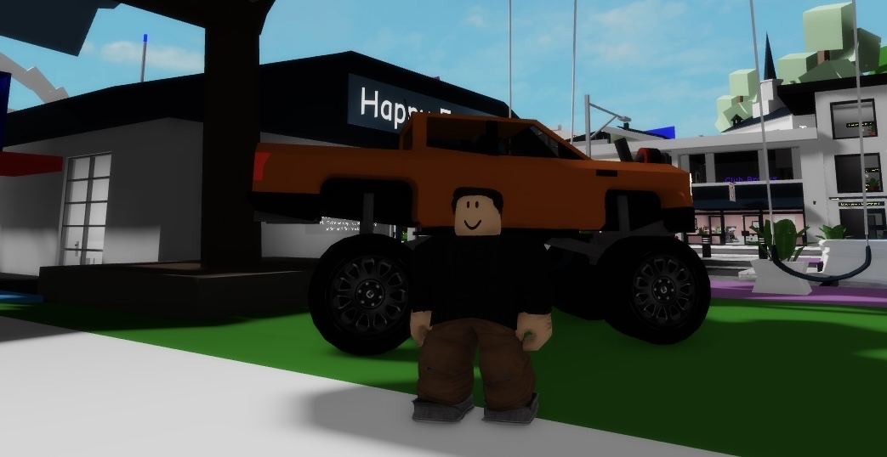2/5/2023 Operation: Arrest Fatties
After retreating from the previous operation, the bravo squad returned with 4/7 of the Bravo 800 squad deploying into da hood to continue pursuit of the targets “mae” and “XYZ” but this time they had someone to help them, “mug”. After a while of fighting and pursuing the Bravo 800 squad managed to capture all targets and arrest them, completing the operation.
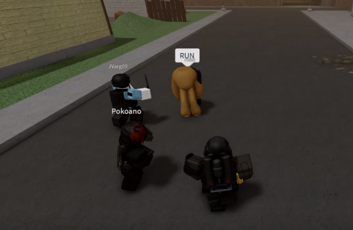2/4/2023 Operation: Hunt Down Fatties
Continuing the pursuit of targets “mae” and “XYZ” 4/7 of the Bravo 800 squad men deployed into the horrible and ugly “da hood” to shoot them down. The squads that accompanied the Bravo 800 squad suffered heavy losses but managed to track down their targets. The targets turned the operation into a hostage rescue quickly and it was difficult to defeat them. The Bravo 800 squad decided to retreat for now.
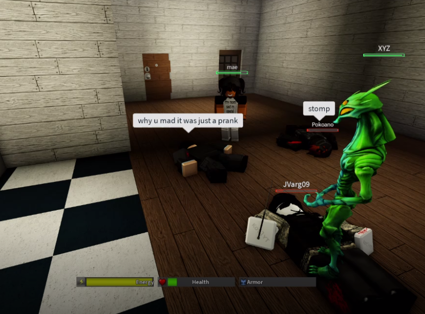2/4/2023 Operation: Kamikaze
5/7 of Bravo 800 deployed into hide and seek extreme to hunt down and murder the targets named “mae” and “XYZ” and succeeded and the targets were scared so they pooped their pants and left
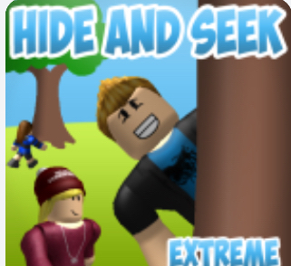7/16/2022 - 7/18/2022 Operation: Unknown
ok so basically all of us (me josh santiago and scott) were playing criminality when suddenly there was this “girl” that joined and suddenly kidnapped me and then everyone else tried to save me because now it turned into a hostage situation and this went back and forth until eventually we all left but it still didn’t end there because the next time that we joined criminality [REDACTED] joined back with us and kidnapped me again except this time it got really weird because [REDACTED]took me to the sewers and [REDACTED] until eventually scott josh and santiago found [REDACTED] and killed [REDACTED] and similarly to last time this process continued again and again until we all ganged up on [REDACTED] and she was taken hostage inside a hotel where [REDACTED] admitted to being a man, except we all knew already because after the first encounter with [REDACTED] we did research to see if it’s a man and it turned out it was so that is all!!!!!